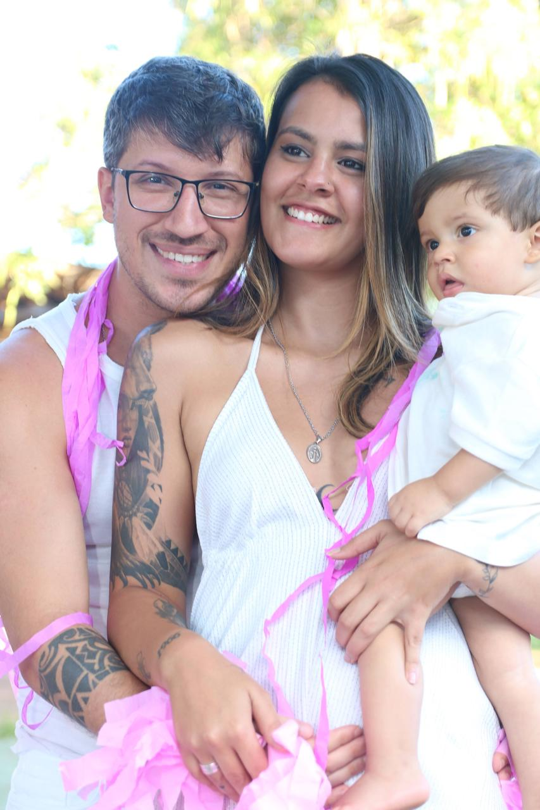

Menu
Sobre mim
Diego é um homem dedicado, apaixonado por sua família e entusiasta de uma vida ativa e saudável. Noivo de Larissa, com quem compartilha uma história de amor e compromisso, Diego é pai de Kauan, um alegre menino de 1 ano e 5 meses, e está ansioso pela chegada de sua segunda filha, Helena, que está por vir.

Diego equilibra suas responsabilidades familiares com uma série de interesses e atividades que refletem sua energia e dedicação. Entre seus hobbies, destaca-se o amor por esportes, especialmente jogar bola e praticar jiu-jitsu. Essas atividades não só proporcionam a ele um meio de se manter em forma, mas também um espaço para descontrair e se divertir.
Além de sua paixão por esportes, Diego é um fervoroso frequentador da academia, onde trabalha para manter uma boa forma física e se desafiar constantemente. Seu interesse por tecnologia da informação (TI) também é uma parte significativa de sua vida. Diego se dedica a essa área com entusiasmo, explorando novas tendências e desenvolvendo suas habilidades, o que complementa sua paixão por uma vida ativa e em constante evolução.
A vida de Diego é uma harmonia entre suas atividades favoritas e seu papel como pai e parceiro. Ele encontra equilíbrio e satisfação em suas diversas paixões, sempre com o apoio e o amor de Larissa e a alegria de seus filhos. Com a chegada de Helena, Diego está empolgado para ampliar ainda mais seu papel de pai e continuar a construir uma vida rica e gratificante ao lado de sua família.